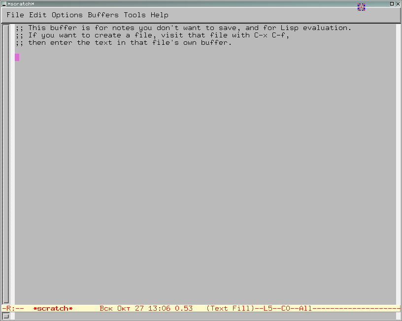
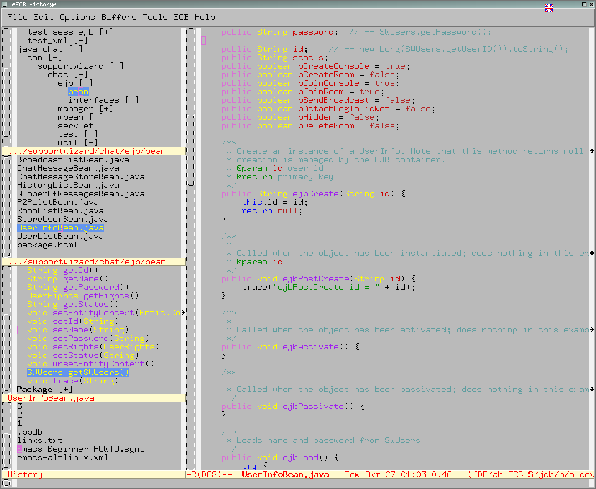
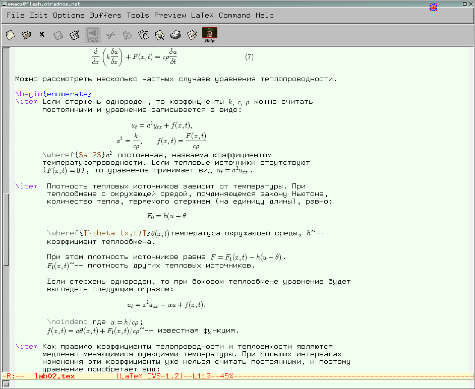

Emacs для начинающих
Алексей Отт
Этот документ предназначен для тех пользователей Linux, которые хотят узнать о Emacs и научиться работать с ним.
Этот документ не является специфичным только для ALT Linux . Его можно использовать для работы с Emacs из других дистрибутивов Linux, в других вариантах операционной системы UNIX, а также с Emacs для Windows.
Emacs — один из наиболее мощных и широко распространённых редакторов, используемых в мире UNIX. По популярности он соперничает с редактором vi и его клонами.
В зависимости от ситуации, Emacs может быть:
Всё это разнообразие достигается благодаря архитектуре Emacs, которая позволяет расширять возможности редактора при помощи языка Emacs Lisp. На языке C написаны лишь самые базовые и низкоуровневые части Emacs, включая полнофункциональный интерпретатор языка Lisp. Таким образом, Emacs имеет встроенный язык программирования, который может использоваться для настройки, расширения и изменения поведения редактора. В действительности, большая часть того редактора, с которым пользователи Emacs работают в наши дни, написана на языке Lisp.
Первая версия редактора Emacs была написана в 70-х годах 20-го столетия Richard Stallman (Ричардом Столманом) как набор макросов для редактора TECO . В дальнейшем, уже будучи основателем Фонда Свободного программного обеспечения Free Software Foundation и проекта GNU, Stallman разработал GNU Emacs в развитие оригинального Emacs и до сих пор сопровождает эту программу. Вы можете подробнее ознакомиться с историей редактора, прочитав статью, располагающуюся по этому адресу.
Emacs является одним из старейших редакторов. Он использовался тысячами программистов на протяжении последних 20 с лишним лет, для него создано много дополнительных пакетов расширений. Эти дополнения позволяют делать с помощью Emacs такие вещи, которые Stallman , вероятно, даже не считал возможными в начале своей работы над редактором. Более подробно я расскажу о них в следующих разделах.
Существует две основных разновидности Emacs — GNU Emacs и XEmacs. GNU Emacs — это развитие оригинальной версии Emacs, написанного Столлманом, а XEmacs — это версия с некоторыми добавлениями к интерфейсу и языку Emacs Lisp. О причинах, по которым образовалось две версии, можно прочесть по этому адресу. В большинстве случаев их поведение похоже друг на друга, но есть и некоторые отличия. Поэтому некоторые пакеты расширений могут работать только с конкретной версией Emacs.
Кроме двух основных версий, существует и множество других редакторов, считающихся вариантами Emacs. Полный их список можно найти на странице Emacs Implementations and Literature.
В данном документе я буду рассказывать, прежде всего, о GNU Emacs, входящем в поставку ALT Linux . Однако большая часть сказанного применима и для XEmacs, а также для версий Emacs в других дистрибутивах Linux.
В этом разделе описываются термины Emacs, с которыми вы встретитесь при использовании редактора.
Буфера и файлы
Буфер — это основная единица редактирования; один буфер соответствует одному куску редактируемого текста. Вы можете иметь несколько буферов, но в каждый конкретный момент вы редактируете только один «выбранный» буфер, хотя когда вы используете несколько окон, то видимыми могут быть несколько буферов. Чаще всего буферы обращаются к какому-либо файлу, считывая данные из файла в буфер, или записывая данные из буфера в файл.
Вы встретите термин «буфер» в документации по Emacs, сообщениях программы, описаниях режимов и пакетов. Просто имейте в виду, что при работе с файлами буфер означает «копию файла, которая находится в памяти в данный момент». Однако необходимо отметить, что буфер не всегда соответствует какому-либо файлу на диске. Очень часто Emacs создаёт буфера в результате выполнения ваших команд. Такие буфера могут содержать вывод команды, список для выбора вариантов и другую информацию.
Точка, область и метка
Точка (point) — это место в буфере, в котором происходит вставка или удаление данных. Считается, что точка находится между двумя знаками, а не на каком-то одном из них. Например, если курсор находится на букве «h» в слове «the», то точка находится между «t» и «h». Курсор терминала показывает положение точки.
Как и другие современные редакторы, Emacs позволяет выполнять разные действия над фрагментами текущего буфера — изменение отступа, проверку орфографии, переформатирование, вырезание, копирование, вставку и т.д. Вы можете подсветить (или «пометить») блок текста, используя клавиатуру или мышь, а затем выполнить операцию только над выделенным блоком. В Emacs такой блок текста называется область (region) . Область — это текст между точкой и меткой.
Метка указывает на позицию в тексте. Она определяет один конец области, в то время как точка находится на другом конце области. Многие команды работают с текстом целиком от точки до метки. Каждый буфер имеет свою метку.
Окна и фреймы
Окно в Emacs — это область экрана, в которой отображается буфер. Когда Emacs запускается, у вас на экране отображается одно окно. При обращении к некоторым функциям Emacs (таким, как оперативная справка и интерактивная документация) часто (временно) открываются дополнительные окна на экране Emacs.
Окна Emacs не имеют ничего общего с окнами графической среды X Window. Одно окно X Window может быть разбито на несколько окон в смысле Emacs, в каждом из которых отображается отдельный буфер. Однако вы можете открыxemaxвать для отображения буферов Emacs и дополнительные окна X, например, при сравнении двух файлов. Эти новые окна X в жаргоне Emacs называются фреймы .
Фрейм (frame) — это отдельное окно используемой оконной системы, в котором отображаются одно или несколько окон Emacs. При этом несколько фреймов, открытых одновременно, являются частью одного сеанса Emacs.
Чтобы запустить Emacs, просто наберите в командной строке команду emacs (или xemacs, если вы хотите посмотреть на этот вариант Emacs). После запуска появится окно (фрейм в терминах Emacs, смотрите раздел “Используемая терминология”) изображённое на рисунке 1.
Рисунок 1. Вид основного окна GNU Emacs

Как видно на рисунке, этот фрейм состоит из следующих частей:
После запуска Emacs без каких-либо параметров в основном окне отображается буфер *scratch*, который используется для оценки выражений Emacs Lisp, а также для заметок, которые вы не хотите сохранять. Этот буфер не сохраняется автоматически, так что будьте осторожны!
Чтобы выйти из Emacs, просто наберите сочетание клавиш C-x C-c (C-x означает, что надо нажать клавишу x, удерживая при этом клавишу Control, это справедливо и для C-c).
Кроме того, вы можете для выхода выбрать пункт Exit Emacs из меню File.
В поставку GNU Emacs включена обширная справка (для описания функций и клавиш вызова справки смотрите таблицу 6). Кроме полного руководства по GNU Emacs, в неё входит учебник для начинающих пользователей. В состав дистрибутивов ALT Linux также включён русский перевод учебника. Для его вызова нажмите сочетание клавиш C-h t, и далее следуйте инструкциям, приведённым в появившемся тексте.
Emacs поставляется со встроенной программой чтения справки в формате Texinfo. В данном формате поставляется руководство по Emacs, руководства по пакетам расширения, а также документация по большинству программ проекта GNU. Для запуска системы Info нажмите сочетание клавиш C-h i. При работе со справочной системой Info, вы в любой момент можете нажать клавишу h и получить справку о том, как пользоваться справочной системой.
Для выполнения команд в Emacs широко используются клавиатурные сокращения. Особенно часто используются сочетания различных клавиш с клавишами Control (обозначается как C-), Meta (обозначается как M-, на клавиатурах персональных компьютеров её роль часто играет клавиша Alt), и Shift (обозначается как S-). Эти клавиши также называются префиксными . Например, запись M-x означает, что надо нажать на клавишу x, при этом удерживая клавишу Meta (или Alt на клавиатурах персональных компьютеров).
Кроме отдельных префиксных клавиш, в Emacs используются сочетания клавиш, которые рассматриваются как префиксные. В отличии от префиксных клавиш Control, Shift и других, такие сочетания клавиш не надо удерживать когда вы нажимаете следующую клавишу. Например, сочетание C-x C-f (команда открытия файла), означает, что надо нажать на клавишу x, удерживая клавишу Control, отпустить обе клавиши, а потом нажать на клавишу f, удерживая клавишу Control.
Префиксные сочетания клавиш различаются по назначению. Например, сочетание клавиш C-x является префиксом для основных команд редактора — открытия и сохранения файлов, а также многих других важных действий. Функции, привязанные к этим клавишам, не зависят от используемого режима. Кроме этого, сочетание клавиш C-h используется для доступа к разным разделам справочной системы.
В отличие от сочетания клавиш C-x, комбинация C-c играет роль префикса для вызова функций, зависящих от используемого режима. Например, сочетание клавиш C-c C-c при редактировании исходного текста на языке С приведёт к комментированию выделенного текста с помощью функции comment-region, а при редактировании файла в формате SGML приведёт к вызову функции sgml-show-context, которая отображает текущее положение точки в иерархии документа.
Emacs был спроектирован таким образом, чтобы быть максимально переносимым и работать на любых терминалах. Поэтому у него имеются собственные привязки к клавишам для команд перемещения курсора (точки) в буфере. В таблице 1 перечислены основные команды перемещения курсора в буфере Emacs.
Таблица 1. Клавиши для перемещения в буфере
|
Сочетание клавиш |
Команда |
Действие |
|
C-p |
previous-line |
Вверх на одну строку |
|
C-n |
next-line |
Вниз на строку |
|
C-f |
forward-char |
Вперёд на один символ |
|
C-b |
backward-char |
Назад на один символ |
|
C-a |
beggining-of-line |
Начало строки |
|
C-e |
end-of-line |
Конец строки |
|
C-v |
scroll-up |
Вниз на одну страницу |
|
M-v |
previous-page |
Вверх на одну страницу |
|
M-f |
next-word |
Вперёд на одно слово |
|
M-b |
previous-word |
Назад на одно слово |
|
M-< |
beginning-of-buffer |
В начало буфера |
|
M-> |
end-of-buffer |
В конец буфера |
|
C-g |
keyboard-quit |
Закончить (прервать) текущую операцию |
|
goto-line |
Переход на заданную строку |
Как правило, при работе в системе X Window, кроме перечисленных клавиш, также работают и привычные для пользователей персональных компьютеров клавиши управления курсором (например, стрелки).
В таблицах 2 — 7перечислены наиболее часто используемые команды, их действие, а также сочетания клавиш, которые используются для их быстрого вызова. Полная форма команды, приведённая в столбце ``Команда'', используется для запуска с помощью префиксного сочетания M-x, например M-x save-buffer.
Таблица 2. Команды работы с текстом
|
Сочетание клавиш |
Команда |
Действие |
|
C-d |
delete-char |
Удаление символа перед точкой |
|
M-d |
kill-word |
Удалить следующее слово |
|
C-k |
kill-line |
Удалить текст до конца строки |
|
M-k |
kill-sentence |
Удалить текст до конца предложения |
|
M-\ |
delete-horizontal-space |
Удалить все пробелы и знаки табуляции вокруг точки |
|
C-q |
quoted-insert |
Вставка символа, соответствующего нажатой клавише или сочетанию, даже если это управляющая последовательность |
|
M-q |
fill-paragraph |
Выравнивает текст в текущем параграфе |
Таблица 3. Команды работы с пометками
|
Сочетание клавиш |
Команда |
Действие |
|
C-space |
set-mark-command |
Установить пометку в точке |
|
C-@ |
set-mark-command |
Установить пометку в точке |
|
C-x C-x |
exchange-point-and-mark |
Поменять местами точку и начало пометки |
|
mark-whole-buffer |
Пометить весь буфер | |
|
C-w |
kill-region |
Удаление выделенной области в список удалений |
|
M-w |
kill-ring-save |
Копирование выделенной области в список удалений |
|
C-y |
yank |
Вставка текста из списка удалений в текущую позицию |
|
M-y |
yank-pop |
Последовательная вставка текста из списка удалений |
|
C-x x N |
copy-to-register |
Копировать отмеченный текст в регистр (N может быть буквой или цифрой, позволяя использовать множество регистров) |
|
C-x g N |
insert-register |
Вставляет в точку содержимое регистра N |
|
M-C-\ |
indent-region |
Выравнивание строк выделенного фрагмента |
Таблица 4. Команды поиска и замены
|
Сочетание клавиш |
Команда |
Действие |
|
C-s |
isearch-forward |
Поиск строки вперёд |
|
C-r |
isearch-backward |
Поиск строки в обратном направлении |
|
replace-string |
Поиск и замена строки | |
|
replace-regexp |
Поиск и замена с использованием регулярного выражения | |
|
M-% |
query-replace |
Поиск и замена с запросом |
Таблица 5. Команды работы с файлами буферами и окнами
|
Сочетание клавиш |
Команда |
Действие |
|
C-x C-f |
find-file |
Открыть файл на диске |
|
C-x C-s |
save-buffer |
Сохранить буфер на диске |
|
C-x C-w |
write-file |
Сохранить буфер в файле с новым именем |
|
C-x C-b |
list-buffers |
Отобразить список открытых буферов в новом окне |
|
C-x b |
switch-to-buffer |
Переключиться в другой буфер в текущем окне |
|
C-x C-c |
save-buffers-kill-emacs |
Перед выходом из редактора запросить о необходимости сохранения изменённых файлов |
|
C-x i |
insert-file |
Вставить содержимое файла в буфер в текущую позицию |
|
C-x 0 |
delete-window |
Закрыть текущее окно (при этом буфер не удаляется) |
|
C-x 1 |
delete-other-windows |
Закрыть все окна кроме текущего |
|
C-x 2 |
split-window-vertically |
Разделить окно по горизонтали |
|
C-x o |
other-window |
Переход в другое окно |
Таблица 6. Команды работы со справочной системой
|
Сочетание клавиш |
Команда |
Действие |
|
C-h ? |
help-for-help |
Информация об использовании справочной системы |
|
C-h t |
help-with-tutorial |
Использовать интерактивный учебник |
|
C-h f |
describe-function |
Показать справку по функции |
|
C-h v |
describe-variable |
Показать справку по переменной |
|
C-h k |
describe-key |
Показать данные, о том, что делает последовательность клавиш |
|
C-h a |
apropos |
Поиск в справке по строке/регулярному выражению |
|
C-h F |
view-emacs-FAQ |
Показать Emacs FAQ |
|
C-h i |
info |
Показать документацию по Emacs (Info) |
Таблица 7. Прочие основные команды Emacs
|
Сочетание клавиш |
Команда |
Действие |
|
M-x command |
Выполнить команду Emacs с именем command | |
|
C-x u |
undo |
Отменить последнюю операцию |
|
C-x r m |
bookmark-set |
Установить закладку. Полезно при поиске |
|
C-x r b |
bookmark-jump |
Перейти к закладке |
Для расширения возможностей Emacs используются так называемые режимы — пакеты расширений, которые изменяют поведение буферов Emacs при редактировании и просмотре текста. Режимы делятся на основные и вспомогательные.
Основные режимы определяют общее поведение редактора. Как правило, основные режимы предоставляют команды и функции для редактирования определённых типов текста. Например, существуют режимы для редактирования исходного текста программ на языках С или Perl. Обычно для конкретного буфера может одновременно использоваться только один основной режим.
Вспомогательные режимы расширяют возможности Emacs. При этом отдельный вспомогательный режим может быть использован в сочетании с разными основными режимами. В одном буфере может быть использовано несколько вспомогательных режимов. Основной и вспомогательные режимы, действующие для данного буфера, отображаются в строке статуса.
Пакеты, входящие в состав дистрибутивов ALT Linux , обычно поставляются со сценариями, которые подключают режимы с определёнными параметрами по умолчанию. Вы можете настроить конкретные параметры для нужного вам режима, используя доступные для него команды настройки (смотрите раздел “Настройка Emacs”).
Многие основные режимы автоматически загружаются (включаются) при открытии файла с соответствующим расширением. Вы также можете включить или отключить нужный режим вручную с помощью команды M-x name-mode, где name — имя режима. Например, команда M-x auto-fill-mode включает режим автоматического заполнения строк или отключает его, если этот режим ранее был включён.
Кроме того, включение или отключение режима можно производить путём установки истинного или ложного значения переменной с именем name-mode. Для установки переменной можно использовать команду M-x set-variable, которая запросит у вас имя переменной и значение для неё. Для истинного значения обычно используется значение t, а для ложного — nil.
Работа с исходными текстами программ
Этот основной режим используется при редактировании исходных текстов программ на языках C, C++, Java и Objective C. Режим предоставляет несколько стилей оформления текстов программ, каждый из которых определяет отступы, расположение открывающих и закрывающих скобок, а также многие другие параметры. Кроме того, данный режим обеспечивает правильную работу с выражениями соответствующего языка, а также подсветку ключевых слов и других элементов текста программы.
Режим также обеспечивает возможность компиляции программ прямо из Emacs, а также интерфейс к отладчику.
Данный режим поставляется вместе с GNU Emacs. Как правило, он подключён (сделан доступным для Emacs) по умолчанию, так что вы можете смело открывать исходный текст на соответствующем языке — режим будет загружен автоматически.
Для редактирования программ на языке Perl самым распространённым является режим cperl-mode. Он обеспечивает подсветку синтаксиса языка, а также много полезных дополнений, например, вывод подсказки о синтаксисе операторов языка или развёртывание сокращений в полные конструкции языка. Режим поставляется вместе с GNU Emacs.
Другие режимы для языков программирования
Кроме перечисленных выше режимов, в поставку GNU Emacs входит много режимов для работы с исходными текстами программ на различных языках программирования, таких как SQL, Python, Tcl, Fortran, Pascal, язык файлов make, языки разных командных процессоров, и многие другие...
Подробный список таких режимов можно найти в Emacs Elisp Archive (смотрите раздел “Полезные ресурсы”).
JDEE — это среда разработки Java для Emacs. Этот пакет обеспечивает эффективную работу с исходными текстами программ на языке Java.
JDEE позволяет компилировать, запускать и отлаживать как автономные программы, так и апплеты, написанные на языке Java. Кроме этого, пакет обеспечивает богатые возможности по автоматической вставке текста для различных конструкций Java, дополнение имён функций и переменных — членов классов, навигацию по исходным текстам и многое другое.
Emacs Code Browser (ECB) представляет собой интегрированную среду разработки, реализованную на основе Emacs. В настоящее время эта среда может быть использована для работы с исходными текстами программ на языках C, C++, Java, Emacs Lisp. Работа с исходными текстами программ на языке Java особенно эффективна при использовании пакета JDEE, упомянутого ранее.
Рисунок 2. Окно Emacs при запущенном Emacs Code Browser

Как видно на рисунке 2, слева расположены четыре окна, в которых отображаются список рабочих каталогов, список файлов в выбранном рабочем каталоге, список функций/методов в текущем файле, а также список буферов. Справа располагается окно редактирования исходного текста программы. При смене текущего буфера изменяются и данные, отображаемые слева.
Для активации пакета необходимо выполнить команду M-x ecb-activate. После выполнения этой команды появится окно, изображённое на рисунке. Для прекращения работы необходимо выполнить команду ecb-deactivate.
Для Emacs доступны не только режимы, рассчитанные на работу с исходными текстами программ. Emacs позволяет комфортно создавать и редактировать тексты любого типа.
Для работы с текстами, для которых используются языки разметки XML/SGML/HTML, существует режим psgml. Данный режим существенно облегчает разметку текстов, позволяя вставлять теги и добавлять атрибуты для них. При этом psgml делает разбор документа и анализирует его DTD (определение типа документа), что позволяет использовать дополнение при вводе имён тегов, а также корректно редактировать атрибуты тегов. Вставка тегов также допускается только в тех местах, где это разрешено определением типа документа. Это позволяет уменьшить количество ошибок при разметке документов.
Кроме того, режим предоставляет множество команд, полезных для работы с документом, таких как перемещение по дереву тегов, свёртывание отдельных частей документа, проверка правильности документа и многие другие.
На сайте Бориса Тоботраса выложен перевод главы из книги «SGML CD: Free SGML Software and How to Use It», которая посвящена использованию Emacs для редактирования файлов в формате SGML.
Для работы с XSL-файлами могут использоваться пакеты xslide, xslt-process, xae. Некоторые из этих пакетов входят в состав дистрибутивов ALT Linux .
Для работы с файлами TeX/LaTeX основным режимом является режим auctex. Этот режим облегчает ввод команд разметки TeX/LaTeX. Кроме того, данный режим обеспечивает компиляцию файлов, просмотр результатов и обработку ошибок.
Для режима auctex существует несколько дополнений, которые позволяют просматривать результат обработки текста прямо в том буфере, где происходит его редактирование. Это пакеты preview-latex и x-symbol. Как выглядит окно Emacs при редактировании текста с использованием пакета preview-latex изображено на рисунке 3.
Рисунок 3. Окно Emacs при использовании пакета preview-latex

Emacs умеет проверять правописание текстов с помощью программы ispell. Поддержка этой программы входит в поставку GNU Emacs. Команды, которые производят проверку текста, начинаются со слова ispell-. Для разных буферов могут использоваться различные словари.
Помимо проверки текста по требованию, доступен вспомогательный режим, который называется flyspell-mode. Он проверяет слова по мере их ввода. Этот режим также входит в поставку GNU Emacs.
Данный режим позволяет использовать несколько основных режимов в одном буфере (отсюда и пошло его название). Это особенно полезно для редактирования файлов, в которых в текст на одном языке внедрены фрагменты на другом языке. Например, этот режим может использоваться при редактировании файлов JSP, PHP, HTML::Mason. Данный пакет собран для ALT Linux под именем emacs-mmm-mode .
Пакет speedbar предоставляет возможность отображения иерархических данных. Это удобно для отображения файловой системы в виде дерева или отображения списка функций в файле с исходным текстом.
Для запуска пакета наберите M-x speedbar. При этом будет создан отдельный фрейм, содержащий отображаемое дерево. Пакет имеет множество настроек, так что вы можете легко настроить его под себя. Для получения дополнительной информации смотрите info-файл для Speedbar.
В этот пакет входит много самых разных полезных дополнений для различных режимов. Например, пакет tiny-perl, входящий в состав этого пакета, предоставляет команды для просмотра документации по модулям Perl, команды для редактирования документации и многое другое. Пакет tiny-tools можно скачать по адресу http://tiny-tools.sourceforge.net. Данный пакет также входит в состав дистрибутивов ALT Linux .
Этот пакет представляет возможности доступа к файлам на других компьютерах. Этот пакет аналогичен по свойствам пакету Ange-FTP, однако Ange-FTP использует для перемещения файлов между машинами протокол ftp, тогда как Tramp использует команды rsh/rcp, или их более безопасные аналоги — ssh/scp. Данный пакет входит в состав дистрибутивов ALT Linux .
Emacs поддерживает различные системы контроля версий. В мире GNU чаще всего используется CVS, поэтому Emacs обеспечивает очень хорошую поддержку этой системы контроля версий. Команды, относящиеся к работе с CVS, имеют префикс cvs-. Пакет поддержки CVS входит в поставку GNU Emacs.
Кроме CVS, Emacs поддерживает работу с системой Subversion. Поддержка этой системы идет вместе с пакетом subversion.
Вы можете выполнять команды командного процессора прямо из GNU Emacs. Для выполнения одной команды вы можете использовать последовательность клавиш M-!, при этом результат выполнения отображается в мини-буфере. Но если вы хотите выполнить несколько команд с удобным просмотром результатов выполнения, то лучше использовать команду M-x shell, которая запускает командный процессор и предоставляет различные возможности по работе с историей команд.
Кроме возможности запуска внешнего командного процессора, для Emacs существует пакет eshell (он поставляется вместе с GNU Emacs), который полностью написан на Emacs Lisp. При этом не запускается никаких внешних процессов, кроме тех, которые совсем уж необходимы для работы. Этот пакет разрабатывался как функциональная замена bash, zsh, 4doc и rc. Для его запуска вам нужно просто набрать M-x eshell, и перед вами возникнет привычная командная строка, только с дополнительными возможностями, которые вы можете расширять собственными силами.
Для чтения справочных страниц (man pages) GNU Emacs представляет два независимых интерфейса — man и woman (от сочетания without man — без использования команды man). Просто наберите команду M-x man или M-x woman и введите название нужной вам страницы, и она будет отображена в буфере Emacs.
В отличие от команды man, команда woman позволяет использовать завершение для имён справочных страниц, однако работает медленнее. Кроме того, команда woman не использует никаких внешних программ для отображения справочных страниц (отсюда происходит её название).
Для настройки Emacs используется специальный файл, который обычно находится в каталоге пользователя и называется .emacs. В этом файле содержатся выражения на Emacs Lisp, которые устанавливают значения переменных, загружают нужные пакеты и выполняют другие действия. В этот же файл записываются функции, определённые пользователем, которые затем могут вызываться им при работе с Emacs. Кроме того, имеется общесистемный файл инициализации, с помощью которого администратор может обеспечить загрузку пакетов, необходимых для всех пользователей данного компьютера.
Первое время вы можете даже не заглядывать в файл настройки, а настраивать Emacs через пункт меню Customize Emacs из меню Options, или с помощью команды M-x customize. Для того, чтобы ваши настройки автоматически восстанавливались при каждом запуске, их необходимо сохранить, нажав на кнопку Save в буфере настройки. При этом в ваш файл настройки записываются выражения Emacs Lisp, устанавливающие необходимые параметры.
Настройка русского языка в GNU Emacs
GNU Emacs для работы с разными языками использует MULE (Многоязыковые расширения для GNU Emacs). Это позволяет эффективно работать как с европейскими, так и с азиатскими языками.
Для работы с конкретным языком необходимо определить так называемое языковое окружение. Для ввода не-ASCII символов надо определить метод ввода. Для переключения между языками используется специальное сочетание клавиш C-\.
Чтобы настроить GNU Emacs для работы с русским языком (предполагается использование кодировки koi8-r), надо поместить в ваш файл настройки (~/.emacs) следующие строки:
(set-language-environment 'Cyrillic-KOI8)
(set-terminal-coding-system 'koi8-r)
(set-keyboard-coding-system 'koi8-r)
(setq default-buffer-file-coding-system 'koi8-r)
(prefer-coding-system 'koi8-r)
(define-coding-system-alias 'koi8-u 'koi8-r)
(put-charset-property 'cyrillic-iso8859-5 'preferred-coding-system 'koi8-r)
(codepage-setup 1251)
(define-coding-system-alias 'windows-1251 'cp1251)
(set-input-mode nil nil 'We-will-use-eighth-bit-of-input-byte)
(setq-default coding-system-for-read 'koi8-r)
(set-selection-coding-system 'koi8-r)
Этот код устанавливает кодировку koi8-r в качестве основной кодировки для чтения, записи и общения с внешними программами. Кроме этого, определяется псевдоним для русской кодировки Windows — cp1251.
Для правильного отображения текстов необходимо установить для начертания default (это можно сделать с помощью команды M-x customize-face) шрифт, который содержит большой набор кодировок, включая кодировку для отображения utf-8 (например, misc-fixed ). Такая настройка позволит, например, нормально работать с русскими и немецкими словарями в одном буфере Emacs.
В пакете emacs-misc-modes, который входит в дистрибутивы ALT Linux , имеется библиотека color-theme. Она представляет пользователю набор готовых тем, которые он может загружать для изменения внешнего вида Emacs. Для загрузки нужной цветовой схемы используются следующие команды:
(require 'color-theme)
(color-theme-gnome2)
Вместо
(color-theme-gnome2)
необходимо вписать название понравившейся вам цветовой схемы.
Emacs Elisp Archive
На этом сервере перечислены практически все режимы и расширения для основных разновидностей редактора Emacs.
Перевод руководства по GNU Emacs
На сервере Русской команды перевода GNU опубликован перевод руководства по GNU Emacs. Возможно, этот перевод несколько устарел, но в любом случае он будет полезен для русскоязычных пользователей этого редактора.
Кроме того, в состав GNU Emacs и XEmacs входит учебное руководство, для которого есть русский перевод. Как правило, этот файл называется TUTORIAL.ru
Группы новостей
В сети usenet существует несколько групп, посвящённых работе с Emacs. Названия этих групп начинаются с comp.emacs или с gnu.emacs. В этих группах часто можно получить полезную информацию и ответы на свои вопросы (но сначала загляните в имеющуюся документацию, возможно, там есть ответ на ваш вопрос).
Главная страница GNU Emacs
Главная страница GNU Emacs на сервере проекта GNU содержит основную информацию по GNU версии данного редактора.
EmacsWiki
Сайт EmacsWiki содержит много информации о Emacs — пакетах, настройке и многом другом.